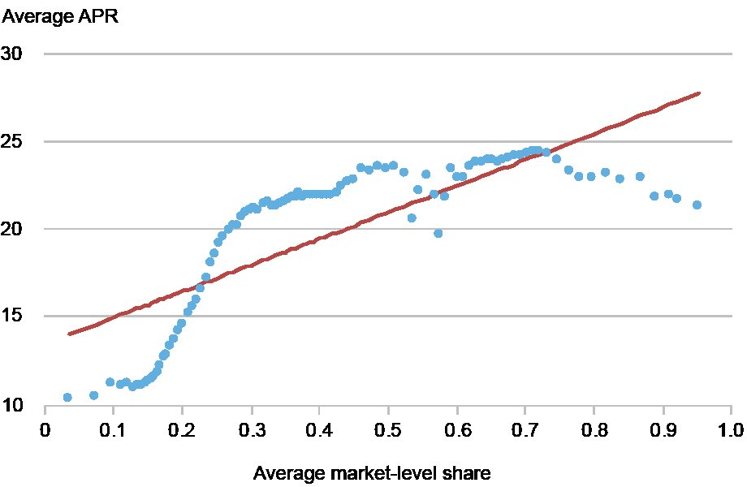
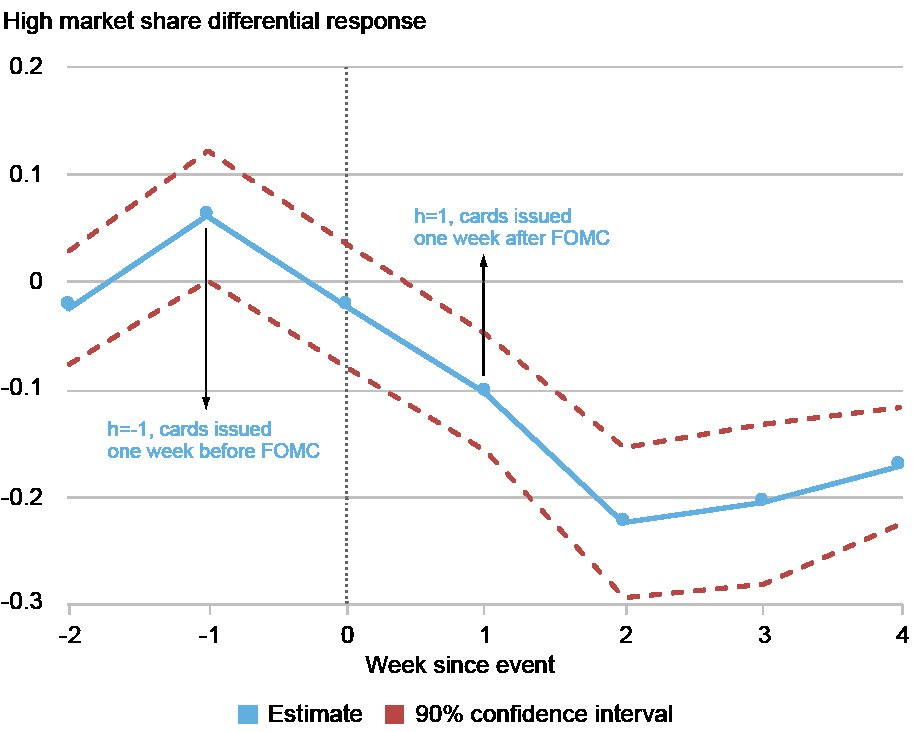

纽约联储 中英对照 2 张原图
信用卡放贷人（lender）不是在「一个全国统一的市场」里竞争，而是同时在几百个细分市场里各占各的位子。当美联储降息、这家银行的资金成本下降时，它在市场份额大的市场里，降息传导给借款人的幅度更小——同样的信用分、同样的收入、同一家银行，不同细分市场的客户会拿到明显不同的利率。
证据来自 1,400 万张新发卡账户：APR（年化利率）与放贷人市场份额的相关系数为 54%；以 2008 年 1 月那次意外降息为事件窗，事件后第 2 周，高份额市场的传导率比同一家银行低份额市场低 20%。
两个借款人看起来几乎一模一样——信用分接近、收入接近——在申请信用卡时却被给出差别很大的利率，这是为什么？在一篇新近的论文里，作者用 1,400 万张新发卡账户的数据回答了这个问题：考察放贷人的资金成本下降时，它给出的报价利率会怎么变。
结论是：当放贷人的资金成本下降时，如果它在某个市场里占的份额很大，它把这次下降传导到报价利率上的比例就更低。也就是说，两个信用分和收入相近、又在同一家银行办卡的借款人，可能在申请同一张卡时看到明显不同的利率。
Data on 14 million newly issued cards show that when a lender's funding costs decline, the lender passes less of that decline on to the offer rate when it holds a large market share.信用卡放贷人并不是在一个无差别的全国性市场里彼此竞争。它们针对特定类型的借款人投放优惠、设计产品。行业报告、监管指引和学术研究都记录了这种按信用风险、收入、卡片特征、获客渠道切分的市场（market segmentation）。
一个在线申请通用卡、非联名卡（co-branded）的优质借款人（prime borrower），和一个接受预审批通用联名卡邀约的次级借款人（subprime borrower），处在完全不同的两个市场里。同一家放贷人，可能在其中一个市场里份额很大，在另一个市场里份额很小。
沿着这些有文献依据的实践，作者把全国范围切分成 960 个市场：四个信用分组 × 卡片与产品类型 × 获客渠道 × 按借款人邮编（ZIP code）划分的收入分组。在他们的数据里，任意一周内，放贷人平均活跃在约 200 个这样的市场里。在每个市场内部，作者把一家放贷人的份额定义为它的收入占该市场总收入的比例。
Credit card lenders do not compete in a single, undifferentiated national market. They target offers and design products for particular types of borrowers.作者首先问：借款人拿到的利率，是否与放贷人在该市场的份额有关？为此他们使用美国货币监理署（Office of the Comptroller of the Currency, OCC）收集的保密账户级数据，其中报告了年化利率（annual percentage rate, APR）以及新开账户的详细借款人特征与卡片特征。作者把账户按可观察到的借款人特征与产品特征（收入、信用分、信用卡类型等）精细匹配成组，使得每组内部的账户彼此高度相似。
下图的横轴是「发出这些卡的放贷人的平均市场份额」，纵轴是「该组账户的平均 APR」。两者的关系明显为正，相关系数 54%：放贷人市场份额越高，对应的 APR 越高。在配套的论文中，作者进一步说明，这个关系不是由借款人之间的特征差异（比如违约风险）或银行之间的特征差异（比如放贷成本）驱动的——把这些特征控制住之后，市场份额与利率依然强烈相关。

不过，组均值仍可能因为市场地位之外的原因而不同。比如各组的违约风险不一样，风险更高的借款人付更高的 APR。为此，作者在配套论文里改为考察组内的 APR 差异：信用分、收入、信用卡类型在构造上已被固定，因此组内的利率差异不能归因于这些因素。他们发现，即使在数据里看起来非常相似的借款人与卡片之间，APR 的差距也会随着放贷人市场地位差距的拉大而变大。
作者也承认，这些模式仍然只是描述性的：放贷人可能在一些他们观察不到的方面存在差异的市场里占据大份额，而这些差异同样会影响 APR。因此他们转向一个对放贷人行为更直接的检验。
We find that, even among borrowers and cards that look very similar in the data, differences in APRs are larger when differences in lenders' market positions are larger.大多数浮动利率信用卡账户在发卡之后就挂在一个合约基准上，所以存量账户 APR 的变化有一部分是机械的。因此作者改看开户时刻——那正是放贷人选择初始 APR（含相对基准的加点）的时候。
基准分析聚焦 2008 年 1 月，因为那个月出现了联邦基金利率幅度最大的意外变动之一；对 2008 至 2019 年的其他事件，作者用美联储收集的可比信息做补充。两个数据集合计覆盖约 1,400 万张新发卡账户，并报告其开户日期、APR，以及详细的借款人与卡片特征。
当一次意外的无风险利率变动改变了放贷人的资金成本时，作者比较变动前后不久开出的账户：剔除该放贷人所有市场共同的 APR 变化，并按可观察的借款人与产品差异（信用分、收入、卡类型）做调整。剩下的就是：同一家放贷人、同一次意外的无风险利率变动，在它份额不同的市场之间的对比。作者把这一度量称为「调整后 APR」（adjusted APR）。
举个例子。假设一家放贷人在市场 A 份额很大、在市场 B 份额很小，而无风险利率下降了 25 个基点（basis point, bp）。如果它在两个市场都把降幅完全传导出去，两个市场新开账户的 APR 都会下降 25bp。但假设它在高份额市场只降 15bp、在低份额市场降 20bp——这两个反应之差，就度量了「在它份额更大的地方，少传导了多少」。
Consider a lender that has a large share in one market but a small share in another, and suppose the risk-free rate declines by 25 basis points.最清楚的证据来自 2008 年 1 月：联邦基金利率意外下降了 25 个基点。作者比较同一家放贷人在事件前后数周内、在高份额市场与低份额市场上分别如何调整利率。
下图纵轴是「调整后 APR 的百分比变化」在高份额市场与该放贷人低份额市场之间的差值（高份额市场的定义：市场份额分布的前 30%）。数值越负，说明高份额市场的调整后 APR 下降幅度比低份额市场更大。横轴是事件前后第几周（记作 h），竖直虚线是事件发生当周：h = −1 表示事件前一周开出的卡，h = 1 表示事件后一周开出的卡。

图表显示：在 FOMC 事件后第 2 周，同一家放贷人在高份额市场的传导率比它在低份额市场的传导率低 20%。原文给的换算是：若调整后 APR 平均为 10%，则无风险利率每变动 1 个百分点，份额高的放贷人给借款人的降息幅度会比份额低时少 2 个百分点（见下方译注对这一换算的口径提醒）。
换个说法：在可观察特征相似、从同一家银行拿到相近卡片的借款人中，处在高份额市场的那些 borrower，拿到的资金成本下降中更少的一部分被传导到他们拿到的 APR 上。这个结果并非 2008 年 1 月独有：把 2008 年余下时间里的重大无风险利率意外变动合并进来，效应依然可观；若把 2008 至 2019 年全部符合条件的升息与降息都纳入，估计值变小，但仍然统计显著。
The chart shows that at two weeks after the Federal Open Market Committee event, the pass-through is 20 percent lower in high-share markets than in low-share markets served by the same lender.高企的信用卡利率、市场集中度、利率离散度，这三件事可能都与市场势力（market power）相符，但单看任何一项都看不出放贷人如何定价。作者的做法是换一个角度：在放贷人资金成本变化之后，比较同一家放贷人在自己不同市场之间如何调整 APR。
他们发现，放贷人在市场份额越大的地方，传导越少，这个模式在各类事件与各类借款人群体中都成立。于是，特征相似的借款人，仅仅因为这家全国性放贷人在他们所处的那个特定市场里份额不同，就可能拿到不同的 APR。
We find that lenders pass through less where their market shares are larger, a pattern that appears across events and borrower groups.| 关键数据点 | 原文 | 译注与核验结论 |
|---|---|---|
| 新发卡账户样本 | roughly 14 million newly issued accounts | ❓ 无法独立核验（OCC 数据属监管内部数据） |
| 全国细分市场数 | 960 nationwide markets | ❓ 无法独立核验；定义与 2024 工作论文版不同（见译注 2） |
| 放贷人周均活跃市场数 | about 200 of these markets on average in a given week | ✅ 量级与论文图 5(b) 分布一致 |
| 份额与 APR 相关系数 | correlation of 54 percent | ✅ 图 1 目视正斜率，方向一致；数值本身无法外部复算 |
| 2008 年 1 月意外降息 | the federal funds rate fell unexpectedly by 25 basis points | ⚠️ 口径不同：目标利率当日降 75bp，日频有效联邦基金利率降 49bp（见译注 4） |
| 「高份额」定义 | top 30 percent of the distribution of market shares | ✅ 与论文「份额高于 70 分位」一致 |
| 事件后第 2 周传导差 | pass-through is 20 percent lower in high-share markets | ✅ 图 2 点估计约 −0.22；⚠️ 论文早期版本报的是「低 10%」（见译注 5） |
| 「少降 2 个百分点」换算 | cut the borrowing rate by 2 percentage points less … per 1 percentage point change | ⚠️ 无法据本文独立复算，隐含弹性约 10（见译注 6） |
docs/data-checks/credit-card-market-power-data-check.md，不随站发布）：
图 1 出处：Sources: Office of the Comptroller of the Currency, Credit Card Metrics data; authors' calculations. Notes: Each point is a group of accounts matched on income, credit score, card type, and other borrower and product characteristics. The vertical axis is the group's average APR; the horizontal axis is the average market share of the lenders issuing those cards.
图 2 出处：Sources: Office of the Comptroller of the Currency Credit Card Metrics data; high-frequency risk-free-rate surprises; authors' calculations. Notes: The chart shows the differential response of adjusted APRs on newly issued cards in a lender's high-share markets relative to its lower-share markets. Negative values indicate that APRs fall less in high-share markets. The vertical line marks the unexpected change in the risk-free rate. FOMC is Federal Open Market Committee.
原文引用格式：Kyle Herkenhoff and Juan M. Morelli, "How Market Position Shapes Credit Card Interest Rates," Federal Reserve Bank of New York Liberty Street Economics, November 4, 2026, https://doi.org/10.59576/lse.20261104
BibTeX：@article{KyleHerkenhoffandJuanM.Morelli2026, author={Kyle Herkenhoff and Juan M. Morelli}, title={How Market Position Shapes Credit Card Interest Rates}, journal={Liberty Street Economics}, note={Liberty Street Economics Blog}, number={November 4}, year={2026}, url={https://doi.org/10.59576/lse.20261104}}
作者注：Kyle Herkenhoff is a consultant at the Federal Reserve Bank of Minneapolis and an associate professor of economics at the University of Minnesota. Juan M. Morelli is a research economist in the Federal Reserve Bank of New York's Research and Statistics Group.
免责声明：The views expressed in this post are those of the author(s) and do not necessarily reflect the position of the Federal Reserve Bank of New York or the Federal Reserve System. Any errors or omissions are the responsibility of the author(s).